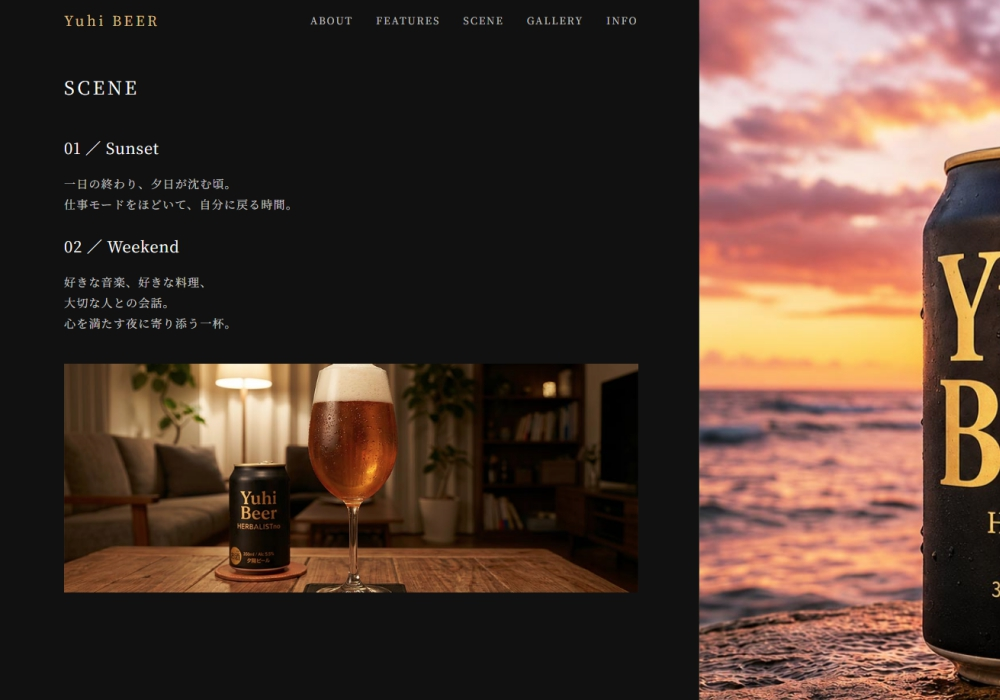
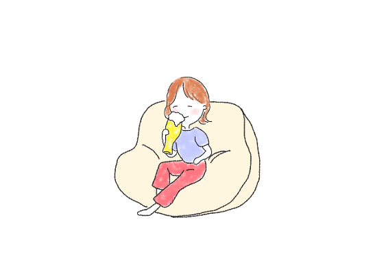
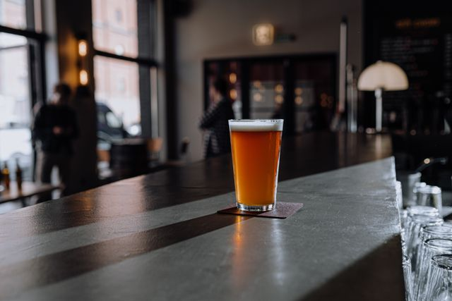
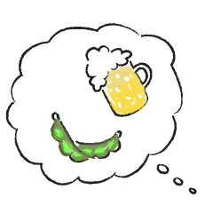

制作ノートYuhiビール

CONCEPT
制作について
アサヒビールのキレのある味わいや缶のデザイン、手に取った瞬間の世界観が好きです。
「こんなビールのサイトがあったら見てみたい」という自分の「好き」を出発点に、このサイトを制作しました。
夕食を作りながらグラス片手に好きな曲を口ずさむ時間や、山登りやジョギングで汗を流したあとの一杯。
頑張ったあとの解放感とお気に入りのビールを味わう時間は、私にとって最高のひとときです。
専門知識がなくても、調べたりAIに相談しながら一歩踏み出すことで、作りたい気持ちを形にできました。
好きなものを自分の手でつくる楽しさやワクワク感が伝われば嬉しいです。ぜひのぞいてみてください。
DESIGN
デザインについて
Color
ビールそのものではなく、一日を頑張ったあとの解放感や気持ちを切り替える「時間」をデザイン。
夕日の温かみと植物をイメージした落ち着いたカラーで、ゆっくり過ごす空気感を表現しています。
Layout
左側にブランドの想い、右側に5種類の缶デザインとパターンを配置し、スクロールしながら世界観を楽しめる構成にしました。
ラストは商品名「HERBLIST」を印象的に配し、余韻の残る見せ方を意識しています。
※PCで見ると、左右に分かれたレイアウトや全体の構成をより楽しめます。
SELECTIONS
Yuhi Beerの世界から、日常のビール時間へ
私がビールを楽しむ時間に欠かせないもの。
お気に入りのビール、グラス、おつまみ。
ゆっくり味わう時間を楽しむためのアイテムを紹介します。

お気に入りのビール
ひとつに絞るのはむずかしい。だって美味しいビールはいっぱいあるから。
あえて紹介するとしたら、やっぱりこのサイトをつくるきっかけになったビール。
アサヒビールの「THE BITTER-IST」。
味、香り、後味。文句なしの一杯です。

ビールを楽しむグラス
1年前まで、私は冷蔵庫から取り出してプシューと開ける「缶派」でした。
缶ビール片手に夕食の支度をするのがスタンダード。
でも、ビール検定の勉強を通じて知ったんです。
グラスに注ぐと、それぞれの色合いと白い泡のコントラストが生まれ、飲む前から心がぐっとつかまれること。
ビールによっておすすめのグラスはありますが、まずはどんなビールにも合わせやすい万能グラスをご紹介します。
一度知ってしまうと、きっとグラスで飲む楽しさにはまります。

ビールと楽しむおつまみ
個人的に、ビールにはソーセージが最高の組み合わせだと思っています。
ボイルもいいけれど、やっぱり魚焼きグリルでじっくり焼いた香ばしさが好き。
はじけた皮からお肉の旨味がにじみ出て、そこに和からしをつける。
おすすめは、香辛料がきいた鳥取県の大山ソーセージ。好きでついつい買ってしまいます。